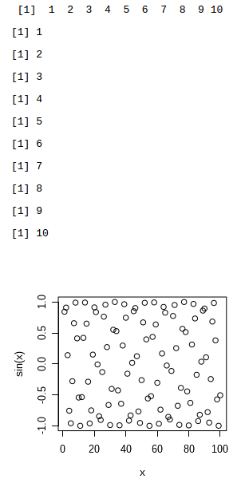
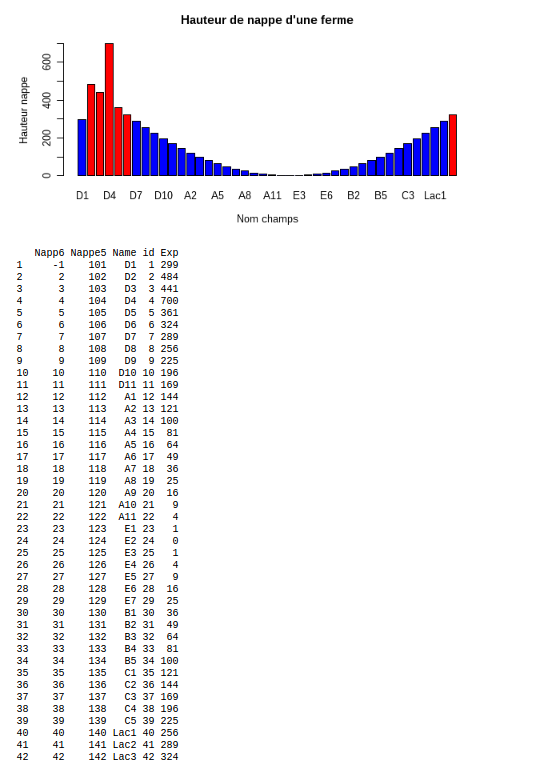
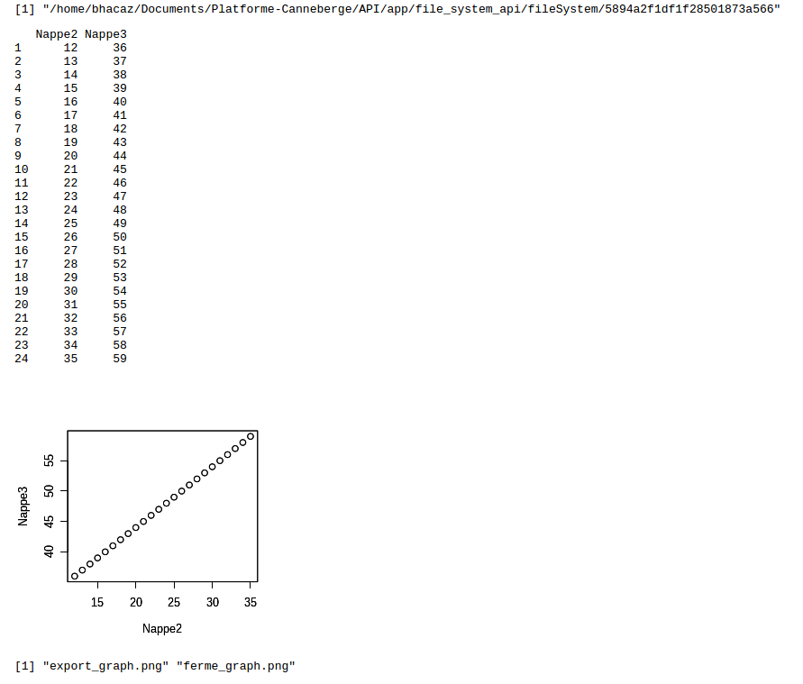
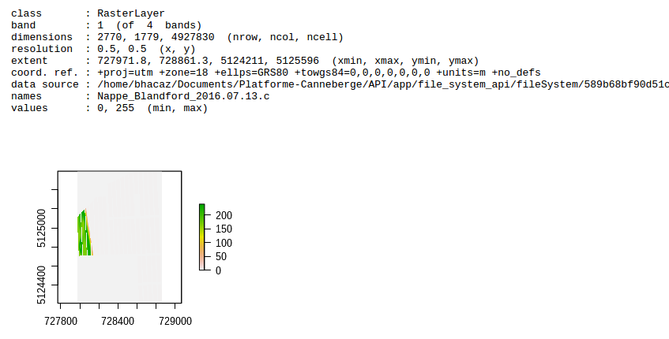

Référence documentation :
FastRWeb
httr
jsonlite
Simple example
x <- 1:10
oprint(x)
for(c in x){
oprint(c)
}
p <- WebPlot(300,300)
x=seq(1,100,1)
plot(x, sin(x))
out(p)
done()

Example with ferme data
library(jsonlite)
library(httr)
### Aller chercher les donnees
url <- 'api.canneberge.io/api/fermes/589b68bf90d51c42998c017d/data?apiKey=5894a2f1df1f28501873a566' # url de l'api
r <- GET(url) # requete HTTP pour recuperer les donnees
fermeData <- fromJSON(content(r, 'text')) # transforme la reponse en data frame (json -> data frame)
### Utilisation de FastRWeb
p <- WebPlot(600, 300) # Creation dun graphique pour le retour web
barplot(fermeData$Exp, names = fermeData$Name,
xlab = "Nom champs", ylab = "Hauteur nappe",
main = "Hauteur de nappe d'une ferme",
col=ifelse(fermeData$Exp>300,"red","blue")) # Creation du graphique
out(p) # Imprimer le graphique sur le rendu web
barplot(fermeData$Exp, names = fermeData$Name,
xlab = "Nom champs", ylab = "Hauteur nappe",
main = "Hauteur de nappe d'une ferme",
col=ifelse(fermeData$Exp>300,"red","blue")) # Creation du graphique
dev.copy(png,'ferme_graph.png')
dev.off()
# fermeData[1, 1] <- 9999 # Changer une donnee de la ferme
oprint(fermeData) # Printer les donnes de la ferme avec FastRWeb
# Enregistrer les nouvelles donnees
# oprint(PUT(url, body = list(data = fermeData), encode = 'json'))
done()

Example with weather
library(jsonlite)
library(httr)
### Aller chercher les donnees
url <- 'api.canneberge.io/api/fermes/589b68bf90d51c42998c017d/weather?simple=true&apiKey=5894a2f1df1f28501873a566' # url de l'api
### Or with lat lng
# url <- 'api.canneberge.io/api/weather?lat=46.123&lng=-72.123simple=true&apiKey=5894a2f1df1f28501873a566' # url de l'api
r <- GET(url) # requete HTTP pour recuperer les donnees
d <- fromJSON(content(r, 'text')) # transforme la reponse en data frame (json -> data frame)
### Utilisation de FastRWeb
p <- WebPlot(600, 300) # Creation dun graphique pour le retour web
library(ggplot2)
library(reshape2)
d <- melt(d, id.vars="day")
# Everything on the same plot
print(ggplot(d, aes(day,value, col=variable)) +
geom_point() +
stat_smooth())
out(p)
oprint(d) # Printer les donnes de la ferme avec FastRWeb
done()
Example file
oprint(getwd())
## This folder and file must exist on the tab Fichiers
d = read.csv("Data/export.csv") # read csv file
oprint(d)
p <- WebPlot(300,300)
plot(d)
dev.copy(png,'Graph/export_graph.png')
dev.off()
plot(d)
out(p)
oprint(list.files('./Graph'))
done()

Example ferme file and rasters
library(raster)
library(rgdal)
p <- WebPlot(300,300)
# The id of the ferme : 589b68bf90d51c42998c017d
r <- raster("../589b68bf90d51c42998c017d/Nappe_Blandford_2016-07-13-c.tif")
plot(r)
oprint(r)
out(p)
done()
